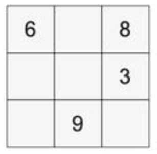

To find the green key you must first complete the magic square below by finding numbers 1-9 for each box so that the sum across each row, column, and diagonal equals 15. Each number will be used only once. 